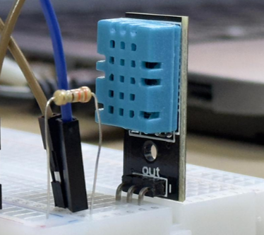
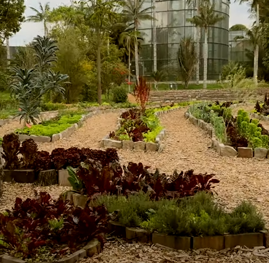
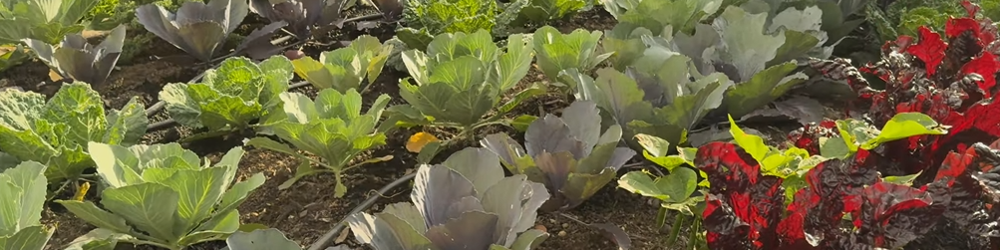

AgroTech
Explora cómo estamos innovando en la gestión del riego agrícola a través de la tecnología.


Acerca del Proyecto
Este proyecto tiene como objetivo optimizar el uso del agua en la agricultura mediante la implementación de tecnologías modernas como Arduino y Java.
Primera Versión del Proyecto
En la primera versión del proyecto, implementamos un sistema de riego automatizado utilizando:
- Arduino como el controlador central.
- Sensores de humedad del suelo para determinar cuándo regar.
- Sensores de temperatura ambiente para monitorear el clima.
- Una pantalla LCD para mostrar los datos en tiempo real.
- Un programa en el IDE de Arduino para procesar y visualizar los datos.

Segunda Versión del Proyecto
En esta versión, hemos ampliado el proyecto para incluir:
- La transformación de los datos recolectados en un archivo de texto plano.
- El desarrollo de una aplicación en Java para cargar estos archivos y agregar información adicional.
- La generación de un registro detallado en formato JSON, integrando tanto los datos de los sensores como los aportados por el usuario.